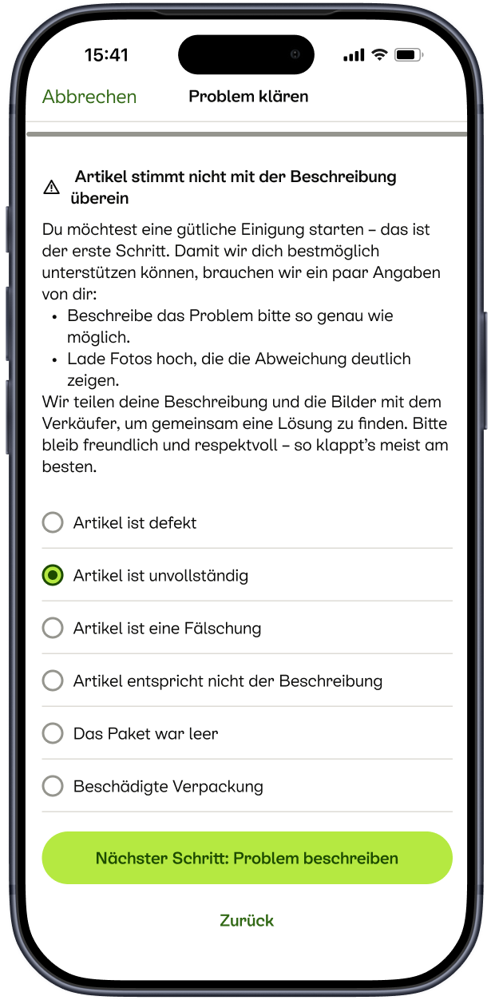
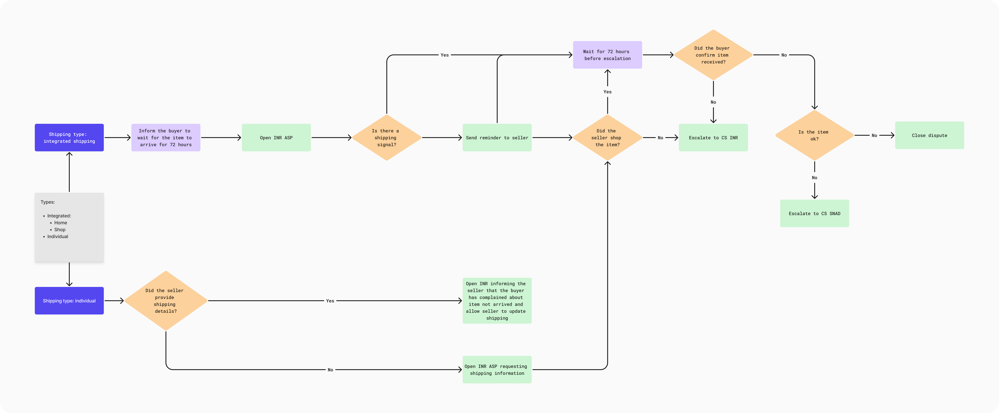

Guided resolution - Buyer
Helping both parties move through the next steps toward an amicable outcome.

Designing self-serve dispute resolution for transactions.
When a transaction went wrong on Kleinanzeigen, buyers and sellers had to contact customer support by phone or email. Common issues generated thousands of support requests every month, even when a clear path to resolution existed.
I led the end-to-end design of a self-serve dispute-resolution experience, enabling buyers and sellers to work towards an amicable solution directly within the product, with a clear path to human support when needed.
Many disputes fell into a small number of recurring categories, including items significantly not as described, items not received, partial refund disagreements, and situations where one party stopped responding.
Each case required support agents to triage the issue, contact the parties, and coordinate the next steps. This created unnecessary waiting for users and a significant operational burden.
The challenge was to identify which disputes could be resolved without an agent and guide both parties towards a fair outcome without removing the option of human support.

I worked closely with Customer Support to map recurring dispute scenarios and define resolution paths, collaborating with Product, Legal, and Trust & Safety Engineering to shape the solution.
The design focused on four connected parts:
The early rollout showed that a substantial share of disputes could be resolved directly between buyers and sellers, without human agent involvement.
44% ↑
Disputes resolved through self-serve
500K +
Projected annual support-cost savings